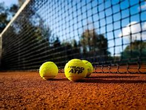
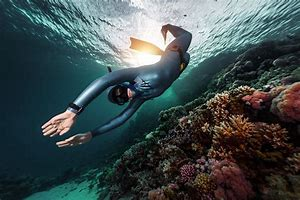

Skiing: While in college in order to get away from the heat of Florida I would often find myself going to Denver Colorado in order to go skiing with my Uncle.
Tennis: Growing up tennis has been a bit of a family sport with most of us playing at some point in our lives, for me I took to another level having the 7th highest win record in high school.
Writing: I've always had an active mind growing up coming up with fun stories and as I got older I decided it was time to bring them to life.
Diving: In college one club I was actively apart of was a freediving club where we would go out to dive sights we saw so many amazing sights and sea life because of it.